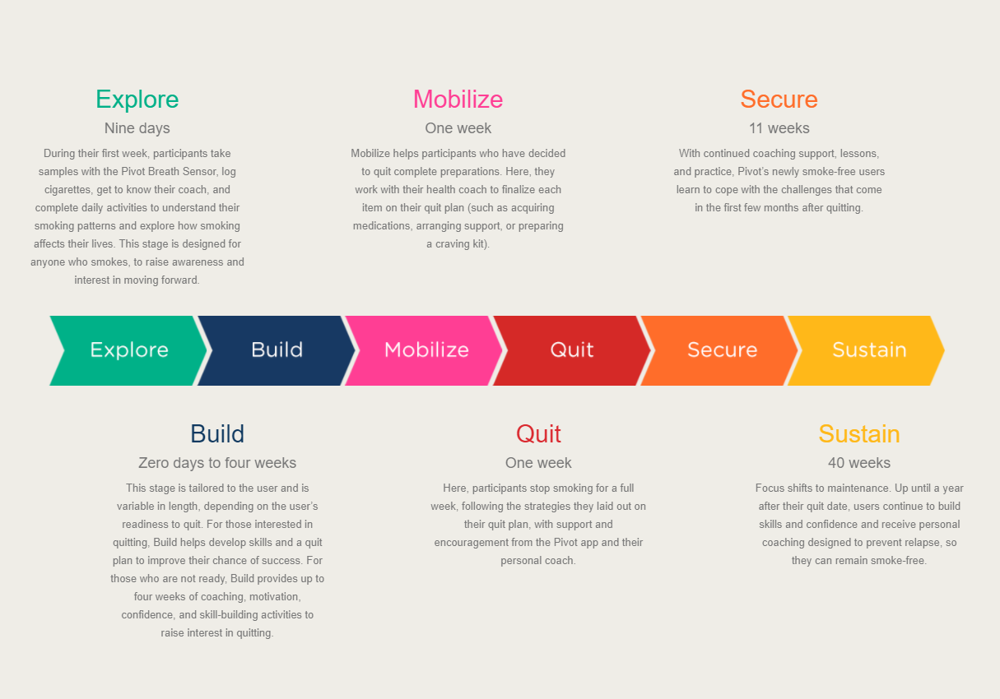

All you need to get started with Pivot is a smartphone. Either iPhone or Android works! We will mail you a device once you register. We will also send you links to download our Breath Sensor app and the Pivot app. No additional hardware or software is needed.
The CO (carbon monoxide) breath sensor device and breath sensor app for your smartphone work together. Combined, they measure the amount of carbon monoxide in your breath. The breath sensor device uses special sensors designed to convert CO gas into an electric current. That current is used to measure CO in your breath. The amount of CO on your breath is directly linked to how much CO is in your blood.
You breathe into the CO breath sensor for several seconds to give a breath sample. The sensor stores the result of the sample until it connects with the breath sensor app on your smartphone. The sensor and app connect using Bluetooth (a connection that does not need a cable).
When the CO breath sensor connects with the app on your smartphone, it passes your breath sample results to the app. You can use the breath sensor app or the Pivot app on your smartphone to review your results. You can even set up the CO breath sensor to vibrate or beep to remind you when to give your breath samples.
As soon as you register for Pivot, we will begin preparing your device for shipping. You will get it three to five days after you register. There is no way to purchase the device separately. It can be obtained only through registration for Pivot.
Pivot has six stages, which form the Pivot Journey. The stages are as follows:
The full Pivot Journey takes at least one year and can be up to a year and two months. It's up to you to customize the journey at your own pace! Most of the time in the journey is spent preparing and learning before you quit smoking and then sustaining your habits once you've quit.
Carrot Inc. is the parent company of Pivot. You can learn more about Carrot here: http://www.carrotsense.com/
Your health coach is your partner in discovering how smoking fits into your life. They partner with Pivot users to help you understand your smoking patterns. They’re there to assist you in your journey to explore or try to quit smoking. They provide support, guidance, and motivation on your Pivot journey!
Pivot lessons are designed to give you nuggets of information about health, cost, habits, and the benefits of using Pivot. They generally take less than five minutes to complete.
You’ll get these lessons as you move through the Pivot stages from Explore, to Build, and then to Mobilize. As you progress you'll also have the chance to practice what you learned from the Pivot lessons through Daily Challenges. These will help you to try out different strategies, find the ones that work for you, and come up with new ideas.
That way, when you get to Quit Day, it won't be so overwhelming—because you will have learned about and tried out a lot of what you need to quit successfully.
Pivot health coaches are trained in both TTS (tobacco treatment specialist) and evidenced-based health coaching. The training for TTS was developed by a world leader in tobacco cessation. Our rigorous training makes Pivot health coaches uniquely suited to guiding our participants through the challenges of quitting smoking.
Our coaches use live chat to reach participants. Coaching through live chat is confidential and convenient. It’s especially useful in situations like the workplace, since coaches can send and receive messages without anyone knowing.
Coaching is part of a behavior change system delivered through our mobile app that includes lessons and activities and provides feedback. Coaches use the information from the app and the breath sensor to guide their coaching.
You’ll get your access code from the company or organization that connected you with the Pivot program. You need the code because Pivot is not available to the general public. Pivot is only offered through partnerships with select companies and organizations.
Not sure what your access code is or where to find it? Try contacting whoever gave you access to Pivot, they should be able to help!
Getting a sense of how many cigarettes you smoke and how often you smoke helps us personalize many of the lessons you'll see during your Pivot journey. It makes the content and information we show you more relevant to your life and experience!
Pivot comes with a first-of-its-kind breath sensor for measurable feedback about smoking. Additionally, Pivot is based on evidence-based quit strategies that have been clinically proven to have the highest success rates. These strategies include:
- Motivational interviews
- Personal coaching
- Quit medications
- Content based on the Public Health Service Clinical Practice Guidelines for Treating Tobacco Use and Dependence.
Programs that incorporate all of these generally require scheduled counseling sessions. They’re effective, but they can be difficult to fit into busy schedules. And they’re not capable of reaching the millions of people who need help.
Programs that can scale to larger numbers of people—via mobile apps or phone calls—generally compromise on coaching or clinical content. They can reach a lot of people and offer flexible scheduling, but they’re not as effective.
Pivot was designed to offer the best of both worlds—evidence-based strategies and AND scale and convenience—plus the added engagement of the breath sensor. It was built by physicians, behavioral psychologists, and Silicon Valley designers and engineers, using the latest in mobile technology and app design to deliver the most effective tobacco-cessation strategies to all smokers.